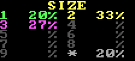
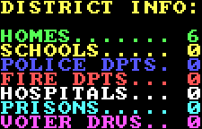
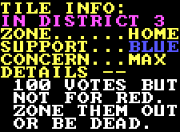
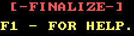

The statusbar will give you all the information you need to be able to effectively district cities. It shows all the information you could need.
The top of the status bar shows the name of the city you are currently working with as well as the city's expected voter population. Under normal circumstances the population value displayed is equal to the number of votes that will be recorded, however other things can alter this number.
Next is information on which district is currently active. At the moment any tiles zoned are to be zoned as being in District #3.

The size information shows the geographic area of each district as a percent. This is important because the largest district can be no more than 20% larger than the size of the smallest district. It also shows you the percent of undistricted tiles remaining. This must read 0% in order to confirm your districting.

The district information section shows various statistics on the currently selected district for zoning. This lets you see a rough idea of what is in a district before you even (un)zone it.

The tile information section shows information on the currently highlighted tile. It states the district it is in, what type of building it is and offers a crude description of what that building means.

Lastly is the finalize button and the help notice. Clicking the finalize button confirms your zoning, but the button will refuse to accept your zoning as final unless the largest district is no more than 20% larger than the smallest district and that the undistricted tile percentage is also 0%. The help text is just a reminder to press F1 for help at any time.